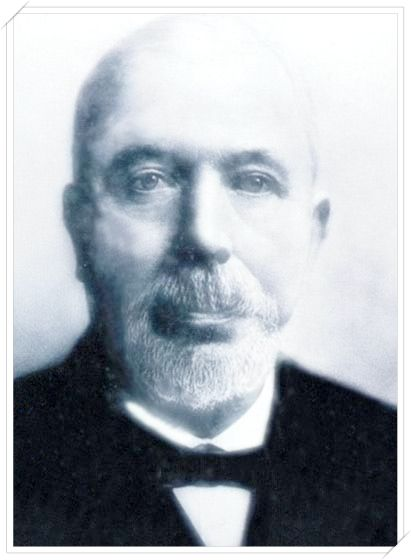

ผูัก่อตั้งลิเวอร์พูลคีอ จอห์น ฮูลดิ้ง
โมสรฟุตบอลลิเวอร์พูล (อังกฤษ: Liverpool Football Club) เป็นสโมสรฟุตบอลอาชีพที่อยู่ในเมืองลิเวอร์พูล ประเทศอังกฤษ ก่อตั้งในปีค.ศ. 1892 ได้เข้าร่วมแข่งขันฟุตบอลลีกในปีต่อมาและใช้สนามแอนฟิลด์เป็นสนามเหย้าตั้งแต่ก่อตั้งสโมสร
สโมสรลิเวอร์พูลก่อตั้งขึ้นวันที่ 15 มีนาคม 1892 โดย จอห์น โฮลดิง (John Houlding) นักธุรกิจท้องถิ่น ที่เช่าพื้นที่บริเวณถนนแอนฟิลด์ ของเมืองลิเวอร์พูลเพื่อสร้างสนามฟุตบอล และได้ปล่อยให้สโมสรเอฟเวอร์ตันเช่าในปี 1884 จนกระทั่งเอฟเวอร์ตันเข้าเป็นสมาชิกฟุตบอลลีก และไม่ต่อสัญญาเช่าอีกในปี1892
เนื่องจาก โฮลดิ้ง ต้องการขึ้นค่าเช่าสนามและพยายามจะเข้าบริหารงานของสโมสร ทำให้ เอฟเวอตัน ตัดสินใจย้ายไปใช้สนามอีกฝากของสวนสาธารณะสแตนลี่ย์พาร์ค และใช้ชื่อสนามว่า กูดิสัน พาร์ค มาจนถึงทุกวันนี้ และเมื่อสนามไม่ได้ใช้ประโยชน์ โฮลดิง จึงตั้งทีมฟุตบอลขึ้นโดยตั้งชื่อทีมว่า ลิเวอร์พูล ฟุตบอล คลับ และใช้เรื่อยมาจถึงปัจจุบันนี้อลิเวอร์พูลลงแข่งขันครั้งแรกเมื่อวันที่ 1 กันยายน 1892 เป็นการแข่งขันนัดกระชับมิตรก่อนเริ่มฤดูกาล โดยเอาชนะ ร็อตเตอร์แฮม ทาวน์ 7-1 โดยผู้เล่นลิเวอร์พูลที่ลงสนามในนัดดังกล่าวนั้นเป็นชาวสกอตแลนด์ทั้งหมด โดยผู้เล่นที่มาจากสกอตแลนด์เพื่อมาเล่นในอังกฤษในเวลานั้น มักจะเรียกว่า "สก็อตจ์โปรเฟสเซอร์ส"
ซึ่ง จอห์น แม็คเคนนา ที่รับบทผู้จัดการทีมในตอนนั้นเดินทางไปสกอตแลนด์เพื่อมองหาผู้เล่น หลังคัดเลือกผู้เล่นแล้ว พวกเขากลายเป็นที่รู้จักในนาม "ทีมออฟแมกส์" พร้อมกับพาทีมคว้าแชมป์แคว้นแลงคาเชียร์ด้วยผลงานชนะ17 จาก 22 เกมที่ลงเล่น
จากผลงานดงกล่าวทำให้ใทางสโมสรสามารถสมัครเข้าร่วมการแข่งขันฟุตบอลลีกได้ โดยเริ่มต้นลงเล่นดิวิชั่น 2 ในฤดูกาล 1893-1894 ซึ่งเก็บชัยชนะได้แบบ 100% (28 นัด) แต่การคว้าแชมป์ดิวิชั่น 2 ในตอนนั้นยังไม่ได้เลื่อนชั้นโดยทันที ต้องไปแข่งนัดชิงดำกับทีมอันดับสอง ซึ่งทีมอันดับสองในขณะนั้นคือ นิวตัน ฮีธ หรือ แมนเชสเตอร์ ยูไนเต็ด ในปัจจุบัน และลิเวอร์พูลเอาชนะ 2-0 ได้เลื่อนชั้นขึ้นสู่ดิวิชั่น 1 ได้ในที่สุด
ปี 1914 ลิเวอร์พูลเข้าถึงรอบชิงชนะเลิศของเอฟเอคัพครั้งแรกแต่อกหักแพ้ เบิร์นลีย์ 0-1 ก่อนที่จะมาคว้าแชมป์ลีกสูงสุดสองสมัยติดต่อกันในปี 1922 และ 1923 แล้วก็ไม่ได้สัมผัสโทรฟี่อีกเลยจนกระทั่งฤดูกาล 1946-47 มาคว้าแชมป์ดิวิชั่น 1 เป็นสมัยที่ห้าของสโมสร
ฤดูกาล 1953-54 ลิเวอร์พูลต้องตกชั้นไปเล่นดิวิชั่น 2 จากนั้นผลงานก็ยังไม่ดีขึ้นถึงขนาดแพ้ Worcester City สโมสรจากนอกลีก 1-2 ตกรอบเอฟเอคัพ ฤดูกาล 1958-59 ซึ่งนั่นถือเป็นจุดเปลี่ยนของสโมสรเมื่อทีมแต่งตั้ง บิลล์ แชงค์ลี่ย์ (Bill Shankly) เป็นผู้จัดการทีมคนใหม่
14 ธันวาคม 1959 แชงค์ลี่ย์ รับตำแหน่งอย่างเป็นทางการ เขาปล่อยผู้เล่น 24 คนออกจากทีม และทำการเปลี่ยนแปลงห้องเก็บรองเท้าที่สนามแอนฟีลด์ให้กลายเป็นห้องสำหรับผู้ฝึกสอนวางแผนการเล่น ถือกำเหนิด "บูทรูมสต๊าฟฟ์" อันเลื่องชื่อ ซึ่งประกอบไปด้วย โจ เฟแกน, รูเบน เบนเน็ตต์ และ บ๊อบ เพสลีย์
